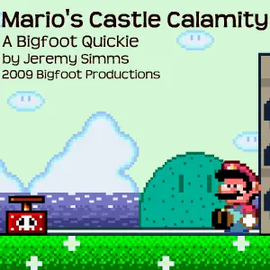
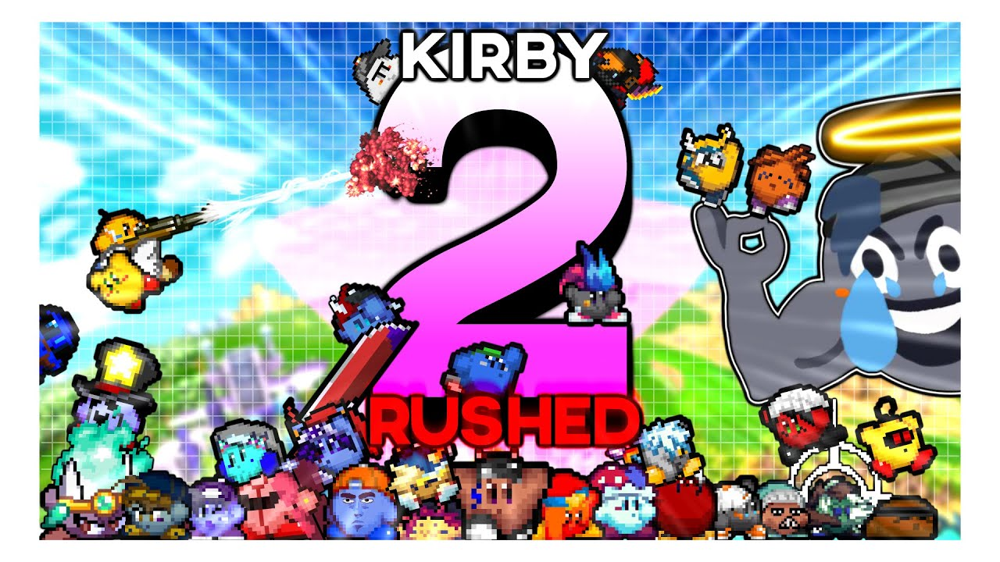
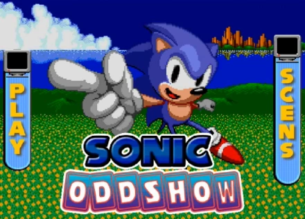
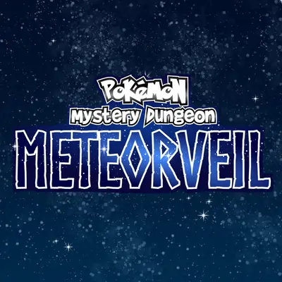
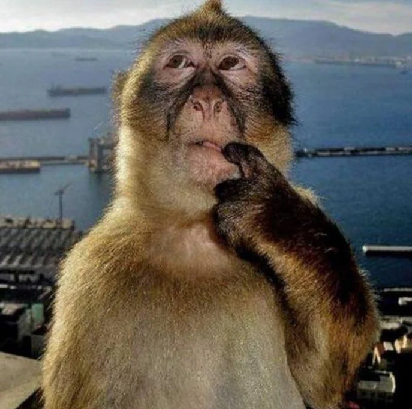

En esta animación, Mario estará tratando de derribar un castillo como siempre lo hace, el problema es que este castillo es mucho más resistible y no será fácil derribarla
Checa la animación aquí
En esta animación, muchos animadores fanáticos de la franquicia Kirby, estarán peleando con otros con sus personajes originales
Checa la animación aquí
En esta animación, Sonic y sus amigos serán puestos en muchas situaciones graciosas que puede que te de una risa al final
Checa la animación aquí
En este comic, una humana fue transformada en un Pikachu después de ver un cometa durante la noche y conoce a dos pokemones que luego se convertirian en sus amigos
Checa el comic aquí
Pense que las creaciones hechas por fans tambien son de importantes como los videojuegos ya que pueden ser inspirados de los videojuegos en si